pacman::p_load(sf, tidyverse, spdep, tmap, knitr)
# pacman is a wrapper for installation and loading of librariesIn-Class Exercise 1
Updated on 2-Dec-2022
(First published on 25-Nov-2022)
Spatial Weights and Applications
3.1 Overview
Learn how to:
Compute spatial weights
Calculate spatial lagged variables
using appropriate functions of spdep package.
(Note: this above was part of an in-class exercise for ISSS624 conducted on 19 Nov 2022).
3.2 Data available
Two datasets are used in this exercise. They are:
Hunan county boundary layer. This is a geospatial data set in ESRI shapefile format.
Hunan_2012.csv: This csv file contains selected Hunan’s local development indicators in 2012.
3.3 Getting Started
The code chunks below will install and load the 5 packages needed for this exericse.
3.4 Import data into R for analysis
3.4.1 Import shapefile whch contains Hunan county boundary layer
The code chunk below will import ESRI shapefile into R
hunan = st_read(dsn = "In-Class_Ex1/data/geospatial",
layer = "hunan") # The dsn path is with reference to the .qmd document created to house this pageReading layer `hunan' from data source
`C:\Cabbie-UK\ISSS624\In-Class_Ex\In-Class_Ex1\data\geospatial'
using driver `ESRI Shapefile'
Simple feature collection with 88 features and 7 fields
Geometry type: POLYGON
Dimension: XY
Bounding box: xmin: 108.7831 ymin: 24.6342 xmax: 114.2544 ymax: 30.12812
Geodetic CRS: WGS 843.4.2 Import attribute data from csv file
We import Hunan_2012.csv into R by using read_csv() of readr package. The output is R dataframe class
hunan2012 = read_csv("In-Class_Ex1/data/aspatial/Hunan_2012.csv", show_col_types = FALSE) Inspect the first rows of hunan2012
head(hunan2012)# A tibble: 6 × 29
County City avg_w…¹ depos…² FAI Gov_Rev Gov_Exp GDP GDPPC GIO Loan
<chr> <chr> <dbl> <dbl> <dbl> <dbl> <dbl> <dbl> <dbl> <dbl> <dbl>
1 Anhua Yiya… 30544 10967 6832. 457. 2703 13225 14567 9277. 3955.
2 Anren Chen… 28058 4599. 6386. 221. 1455. 4941. 12761 4189. 2555.
3 Anxiang Chan… 31935 5517. 3541 244. 1780. 12482 23667 5109. 2807.
4 Baojing Huna… 30843 2250 1005. 193. 1379. 4088. 14563 3624. 1254.
5 Chaling Zhuz… 31251 8241. 6508. 620. 1947 11585 20078 9158. 4287.
6 Changni… Heng… 28518 10860 7920 770. 2632. 19886 24418 37392 4243.
# … with 18 more variables: NIPCR <dbl>, Bed <dbl>, Emp <dbl>, EmpR <dbl>,
# EmpRT <dbl>, Pri_Stu <dbl>, Sec_Stu <dbl>, Household <dbl>,
# Household_R <dbl>, NOIP <dbl>, Pop_R <dbl>, RSCG <dbl>, Pop_T <dbl>,
# Agri <dbl>, Service <dbl>, Disp_Inc <dbl>, RORP <dbl>, ROREmp <dbl>, and
# abbreviated variable names ¹avg_wage, ²deposite3.4.3 Perform relational join
To combine the information in the shapefile and the attribute data, we perform a left_join (from dplyr package) using the county name that is available under NAME_3 column of the Hunan shapefile and the County column n the Hunan attribute file
hunan = left_join(hunan,hunan2012,
by =c("NAME_3"="County"))3.4.4 Visualise Regional Development Indicator
We prepare a basemap and a choropleth map showing the distribution of GDP per capita (GDPPC) 2012 by using qtm() of tmap package
basemap = tm_shape(hunan) +
tm_polygons() +
tm_text("NAME_3", size=0.35) +
tm_layout(main.title = "Basemap of Hunan province, China",
main.title.position = "center",
main.title.size = 1.2)
gdppc =qtm(hunan, fill = "GDPPC",
legend.height = 0.25,
legend.width = 0.35,
legend.outside = FALSE,
legend.position = c("right", "bottom")
) +
tm_layout(main.title = "Distribution of GDPPC, 2012",
main.title.position = "center",
main.title.size = 1.2)
tmap_arrange(basemap, gdppc, asp=1, ncol=2)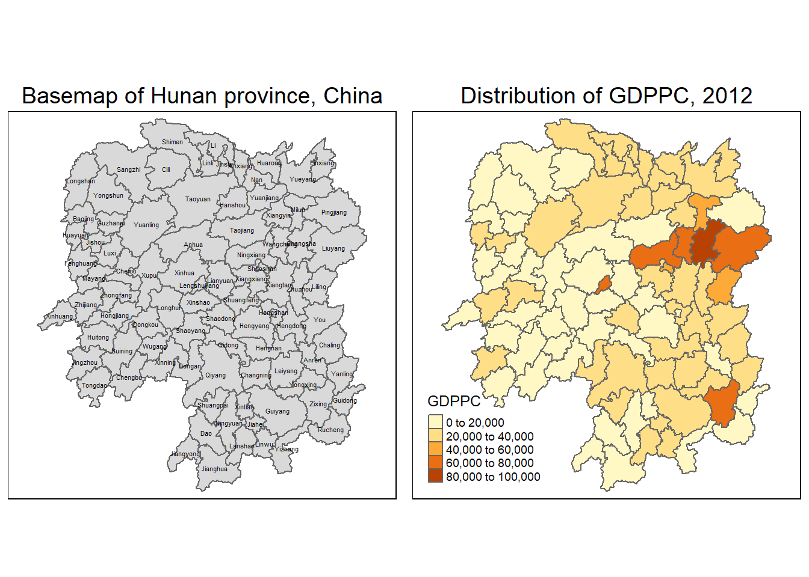
3.5 Compute Contiguity Spatial Weights
We will use poly2nb() of spdep package to compute contiguity weight matrices. The function builds a neighbours list based on regions with contiguous boundaries, that is sharing one or more boundary point. The function uses the Queen criteria by default (see section 3.5.3 to use the Rook criteria).
3.5.1 Compute contiguity based neighbors using Queen method
THe Queen method identifies neighbors that surround the area of study. In the diagram below, the blue cell i, is surrounded by 8 neighbors

The code chunk below is used to compute Queen contiguity weight matrix.
wm_q <- poly2nb(hunan, queen=TRUE)
summary(wm_q)Neighbour list object:
Number of regions: 88
Number of nonzero links: 448
Percentage nonzero weights: 5.785124
Average number of links: 5.090909
Link number distribution:
1 2 3 4 5 6 7 8 9 11
2 2 12 16 24 14 11 4 2 1
2 least connected regions:
30 65 with 1 link
1 most connected region:
85 with 11 linksThe summary report above shows that there are 88 area units in Hunan.
There are two area units - regions 30 and 65 - with only one neighbor.
The most connected area unit - region 85 - has 11 neighbors.
3.5.1.1 List all neighboring polygons
For example, to see the neighbors for the first polygon in the object, type:
wm_q[[1]][1] 2 3 4 57 85Polygon 1 has 5 neighbors. The numbers represent the polygon IDs as stored in hunan SpatialPolygonsDataFrame class.
3.5.1.2 Retrieve the county name of Polygon ID=1
We can use the following code chunk below:
hunan$County[1][1] "Anxiang"3.5.1.3 Review the county names of neighboring ploygons
We can use the following code chunk:
hunan$NAME_3[wm_q[[1]]][1] "Hanshou" "Jinshi" "Li" "Nan" "Taoyuan"or
hunan$NAME_3[c(2,3,4,57,85)][1] "Hanshou" "Jinshi" "Li" "Nan" "Taoyuan"3.5.1.4 Retrieve the GDPPC of the neighboring counties
We can use the code chunk below.
nb1 = wm_q[[1]]
nb1 = hunan$GDPPC[nb1]
nb1[1] 20981 34592 24473 21311 228793.5.1.5 Display the weight matrix of all the 88 counties by using the str() method
str(wm_q)List of 88
$ : int [1:5] 2 3 4 57 85
$ : int [1:5] 1 57 58 78 85
$ : int [1:4] 1 4 5 85
$ : int [1:4] 1 3 5 6
$ : int [1:4] 3 4 6 85
$ : int [1:5] 4 5 69 75 85
$ : int [1:4] 67 71 74 84
$ : int [1:7] 9 46 47 56 78 80 86
$ : int [1:6] 8 66 68 78 84 86
$ : int [1:8] 16 17 19 20 22 70 72 73
$ : int [1:3] 14 17 72
$ : int [1:5] 13 60 61 63 83
$ : int [1:4] 12 15 60 83
$ : int [1:3] 11 15 17
$ : int [1:4] 13 14 17 83
$ : int [1:5] 10 17 22 72 83
$ : int [1:7] 10 11 14 15 16 72 83
$ : int [1:5] 20 22 23 77 83
$ : int [1:6] 10 20 21 73 74 86
$ : int [1:7] 10 18 19 21 22 23 82
$ : int [1:5] 19 20 35 82 86
$ : int [1:5] 10 16 18 20 83
$ : int [1:7] 18 20 38 41 77 79 82
$ : int [1:5] 25 28 31 32 54
$ : int [1:5] 24 28 31 33 81
$ : int [1:4] 27 33 42 81
$ : int [1:3] 26 29 42
$ : int [1:5] 24 25 33 49 54
$ : int [1:3] 27 37 42
$ : int 33
$ : int [1:8] 24 25 32 36 39 40 56 81
$ : int [1:8] 24 31 50 54 55 56 75 85
$ : int [1:5] 25 26 28 30 81
$ : int [1:3] 36 45 80
$ : int [1:6] 21 41 47 80 82 86
$ : int [1:6] 31 34 40 45 56 80
$ : int [1:4] 29 42 43 44
$ : int [1:4] 23 44 77 79
$ : int [1:5] 31 40 42 43 81
$ : int [1:6] 31 36 39 43 45 79
$ : int [1:6] 23 35 45 79 80 82
$ : int [1:7] 26 27 29 37 39 43 81
$ : int [1:6] 37 39 40 42 44 79
$ : int [1:4] 37 38 43 79
$ : int [1:6] 34 36 40 41 79 80
$ : int [1:3] 8 47 86
$ : int [1:5] 8 35 46 80 86
$ : int [1:5] 50 51 52 53 55
$ : int [1:4] 28 51 52 54
$ : int [1:5] 32 48 52 54 55
$ : int [1:3] 48 49 52
$ : int [1:5] 48 49 50 51 54
$ : int [1:3] 48 55 75
$ : int [1:6] 24 28 32 49 50 52
$ : int [1:5] 32 48 50 53 75
$ : int [1:7] 8 31 32 36 78 80 85
$ : int [1:6] 1 2 58 64 76 85
$ : int [1:5] 2 57 68 76 78
$ : int [1:4] 60 61 87 88
$ : int [1:4] 12 13 59 61
$ : int [1:7] 12 59 60 62 63 77 87
$ : int [1:3] 61 77 87
$ : int [1:4] 12 61 77 83
$ : int [1:2] 57 76
$ : int 76
$ : int [1:5] 9 67 68 76 84
$ : int [1:4] 7 66 76 84
$ : int [1:5] 9 58 66 76 78
$ : int [1:3] 6 75 85
$ : int [1:3] 10 72 73
$ : int [1:3] 7 73 74
$ : int [1:5] 10 11 16 17 70
$ : int [1:5] 10 19 70 71 74
$ : int [1:6] 7 19 71 73 84 86
$ : int [1:6] 6 32 53 55 69 85
$ : int [1:7] 57 58 64 65 66 67 68
$ : int [1:7] 18 23 38 61 62 63 83
$ : int [1:7] 2 8 9 56 58 68 85
$ : int [1:7] 23 38 40 41 43 44 45
$ : int [1:8] 8 34 35 36 41 45 47 56
$ : int [1:6] 25 26 31 33 39 42
$ : int [1:5] 20 21 23 35 41
$ : int [1:9] 12 13 15 16 17 18 22 63 77
$ : int [1:6] 7 9 66 67 74 86
$ : int [1:11] 1 2 3 5 6 32 56 57 69 75 ...
$ : int [1:9] 8 9 19 21 35 46 47 74 84
$ : int [1:4] 59 61 62 88
$ : int [1:2] 59 87
- attr(*, "class")= chr "nb"
- attr(*, "region.id")= chr [1:88] "1" "2" "3" "4" ...
- attr(*, "call")= language poly2nb(pl = hunan, queen = TRUE)
- attr(*, "type")= chr "queen"
- attr(*, "sym")= logi TRUE3.5.2 Compute contiguity based neighbors using Rook method
The Rook method identifies adjacent neighbors. In the diagram below, the blue cell i has 4 neighbors, much like how a Rook moves about on a chess board.
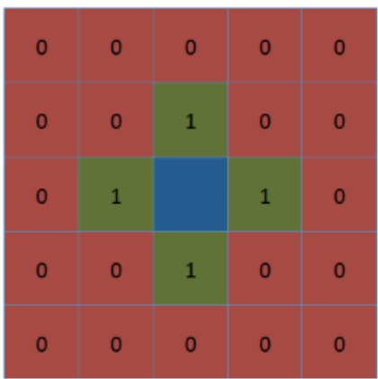
The code chunk below is used to compute Rook contiguity weight matrix.
wm_r <- poly2nb(hunan, queen=FALSE)
summary(wm_r)Neighbour list object:
Number of regions: 88
Number of nonzero links: 440
Percentage nonzero weights: 5.681818
Average number of links: 5
Link number distribution:
1 2 3 4 5 6 7 8 9 10
2 2 12 20 21 14 11 3 2 1
2 least connected regions:
30 65 with 1 link
1 most connected region:
85 with 10 linksThe summary report above shows that there are 88 area units in Hunan. Similar to the Queen’s method, the most connected area unit - Region 85 - has 10 neighbors. Two area units - Regions 30 and 65 - only have 1 neighbor.
3.5.3 Visualise contiguity weights using a Connectivity Graph
A connectivity graph takes a point and displays a line to each neighboring point. For polygons, we will typically use the polygon centroids as the connecting points.
3.5.3.1 Prepare the latitude and longitude of the Polygon Centroids om a separate data frame
To do so, we will use a mapping function to apply the st_centroid method on the geometry column of each area unit/county.
To get the longitude values, we map the st_centroid function over the geometry column of hunan and access the longitude value through double bracket notation [[]] and 1. This allows us to get only the longitude, which is the first value in each centroid.
longitude <- map_dbl(hunan$geometry, ~st_centroid(.x)[[1]])To get the latitude, we access the second value in each centroid.
latitude <- map_dbl(hunan$geometry, ~st_centroid(.x)[[2]])We then combine the longitude and latitude values into a data frame object
coords = cbind(longitude,latitude)We check the first few observations to see if the values are formatted correctly.
head(coords) longitude latitude
[1,] 112.1531 29.44362
[2,] 112.0372 28.86489
[3,] 111.8917 29.47107
[4,] 111.7031 29.74499
[5,] 111.6138 29.49258
[6,] 111.0341 29.798633.5.3.2 Plot Connectivity Map with Queen contiguity
# Plot the base layer
plot(hunan$geometry, border="lightgrey")
# Add on the connectivity layer
plot(wm_q, coords, pch = 19, cex = 0.6, add = TRUE, col= "red")
title(main="Queen Contiguity")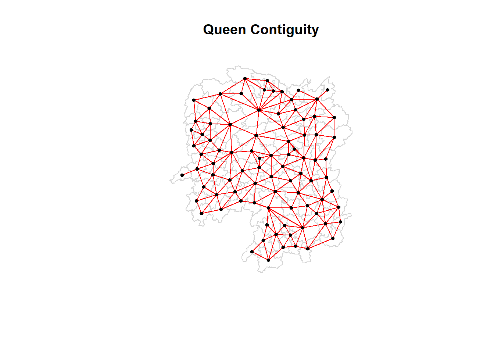
# pch refers to the point symbol (dot)
# cex refers to the point size3.5.3.3 Plot Connectivity Map using Rook contiguity
plot(hunan$geometry, border="lightgrey")
plot(wm_r, coords, pch = 19, cex = 0.6, add = TRUE, col = "blue")
title(main="Rook Contiguity")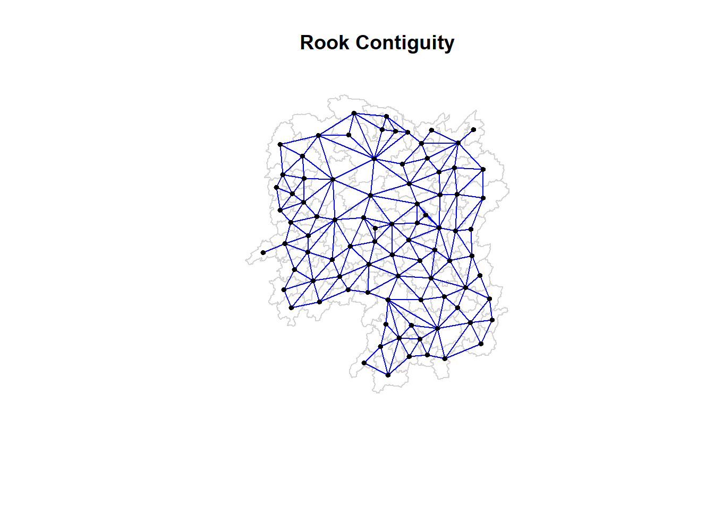
3.5.3.4 Plot Connectivity Map using Queen and Rook contiguity
par(mfrow=c(1,2))
plot(hunan$geometry, border="lightgrey")
plot(wm_q, coords, pch = 19, cex = 0.6, add = TRUE, col= "red")
title(main="Queen Contiguity")
plot(hunan$geometry, border="lightgrey")
plot(wm_r, coords, pch = 19, cex = 0.6, add = TRUE, col = "blue")
title(main="Rook Contiguity")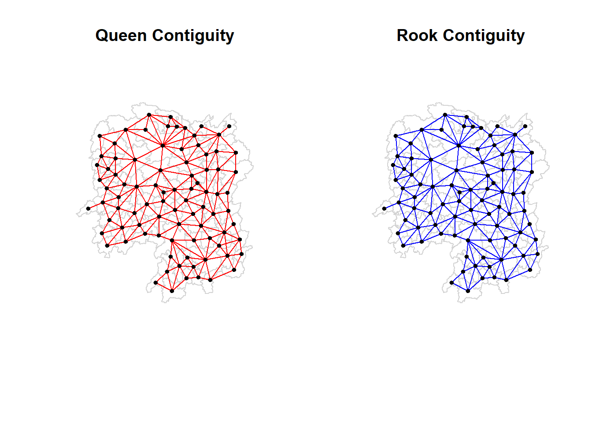
3.6 Compute distance based neighbors
We will use the dnearneigh() of spdep package to derive distance-based weight matrices . The function identifies neighbours of region points by Euclidean distance with a distance band with lower distance bound (d1), and upper distance bound (d2).
3.6.1 Determine the cut-off distance
We need to determine the upper limit for distance band by using the steps below so that all area units will have at least 1 neighbor:
Return a matrix with the indices of points belonging to the set of the k nearest neighbours of each other by using knearneigh() of spdep. By default k=1 and we can set this argument value explicitly.
Convert the knn object returned by knearneigh() into a neighbours list of class nb with a list of integer vectors containing neighbour region number ids by using knn2nb().
Return the length of neighbour relationship edges by using nbdists() of spdep. The function returns the Euclidean distances along the links in a list of the same form as the neighbors list.
Remove the list structure of the returned object by using unlist().
# Covers the first 2 points above to prepare a list of nearest neighbor for each area unit
k1 = knn2nb(knearneigh(coords,k=1))
# Covers the 3rd and 4th point above to return a vector of distances between the area unit and its nearest neighbor
k1dists <- unlist(nbdists(k1, coords, longlat = TRUE))
#Summarise the results
summary(k1dists) Min. 1st Qu. Median Mean 3rd Qu. Max.
24.79 32.57 38.01 39.07 44.52 61.79 The summary report shows that the largest first nearest neighbor distance is 61.79 km. This will be used as the upper threshold to provide certainty that all units will have at least one neighbor.
3.6.2 Compute fixed distance weight matrix
3.6.2.1 Compute the distance weight matrix by using dnearneigh()
wm_d62 = dnearneigh(coords, 0, 62, longlat = TRUE) # longlat = TRUE if point coordinates are geographical longitude-latitude decimal degrees, in which case distances are measured in kilometers
wm_d62Neighbour list object:
Number of regions: 88
Number of nonzero links: 324
Percentage nonzero weights: 4.183884
Average number of links: 3.681818 What is the meaning of “Average number of links: 3.681818” shown above?
|
3.6.2.2 Display the content of wm_d62 weight matrix using str()
str(wm_d62)List of 88
$ : int [1:5] 3 4 5 57 64
$ : int [1:4] 57 58 78 85
$ : int [1:4] 1 4 5 57
$ : int [1:3] 1 3 5
$ : int [1:4] 1 3 4 85
$ : int 69
$ : int [1:2] 67 84
$ : int [1:4] 9 46 47 78
$ : int [1:4] 8 46 68 84
$ : int [1:4] 16 22 70 72
$ : int [1:3] 14 17 72
$ : int [1:5] 13 60 61 63 83
$ : int [1:4] 12 15 60 83
$ : int [1:2] 11 17
$ : int 13
$ : int [1:4] 10 17 22 83
$ : int [1:3] 11 14 16
$ : int [1:3] 20 22 63
$ : int [1:5] 20 21 73 74 82
$ : int [1:5] 18 19 21 22 82
$ : int [1:6] 19 20 35 74 82 86
$ : int [1:4] 10 16 18 20
$ : int [1:3] 41 77 82
$ : int [1:4] 25 28 31 54
$ : int [1:4] 24 28 33 81
$ : int [1:4] 27 33 42 81
$ : int [1:2] 26 29
$ : int [1:6] 24 25 33 49 52 54
$ : int [1:2] 27 37
$ : int 33
$ : int [1:2] 24 36
$ : int 50
$ : int [1:5] 25 26 28 30 81
$ : int [1:3] 36 45 80
$ : int [1:6] 21 41 46 47 80 82
$ : int [1:5] 31 34 45 56 80
$ : int [1:2] 29 42
$ : int [1:3] 44 77 79
$ : int [1:4] 40 42 43 81
$ : int [1:3] 39 45 79
$ : int [1:5] 23 35 45 79 82
$ : int [1:5] 26 37 39 43 81
$ : int [1:3] 39 42 44
$ : int [1:2] 38 43
$ : int [1:6] 34 36 40 41 79 80
$ : int [1:5] 8 9 35 47 86
$ : int [1:5] 8 35 46 80 86
$ : int [1:5] 50 51 52 53 55
$ : int [1:4] 28 51 52 54
$ : int [1:6] 32 48 51 52 54 55
$ : int [1:4] 48 49 50 52
$ : int [1:6] 28 48 49 50 51 54
$ : int [1:2] 48 55
$ : int [1:5] 24 28 49 50 52
$ : int [1:4] 48 50 53 75
$ : int 36
$ : int [1:5] 1 2 3 58 64
$ : int [1:5] 2 57 64 66 68
$ : int [1:3] 60 87 88
$ : int [1:4] 12 13 59 61
$ : int [1:5] 12 60 62 63 87
$ : int [1:4] 61 63 77 87
$ : int [1:5] 12 18 61 62 83
$ : int [1:4] 1 57 58 76
$ : int 76
$ : int [1:5] 58 67 68 76 84
$ : int [1:2] 7 66
$ : int [1:4] 9 58 66 84
$ : int [1:2] 6 75
$ : int [1:3] 10 72 73
$ : int [1:2] 73 74
$ : int [1:3] 10 11 70
$ : int [1:4] 19 70 71 74
$ : int [1:5] 19 21 71 73 86
$ : int [1:2] 55 69
$ : int [1:3] 64 65 66
$ : int [1:3] 23 38 62
$ : int [1:2] 2 8
$ : int [1:4] 38 40 41 45
$ : int [1:5] 34 35 36 45 47
$ : int [1:5] 25 26 33 39 42
$ : int [1:6] 19 20 21 23 35 41
$ : int [1:4] 12 13 16 63
$ : int [1:4] 7 9 66 68
$ : int [1:2] 2 5
$ : int [1:4] 21 46 47 74
$ : int [1:4] 59 61 62 88
$ : int [1:2] 59 87
- attr(*, "class")= chr "nb"
- attr(*, "region.id")= chr [1:88] "1" "2" "3" "4" ...
- attr(*, "call")= language dnearneigh(x = coords, d1 = 0, d2 = 62, longlat = TRUE)
- attr(*, "dnn")= num [1:2] 0 62
- attr(*, "bounds")= chr [1:2] "GE" "LE"
- attr(*, "nbtype")= chr "distance"
- attr(*, "sym")= logi TRUE3.6.2.3 Alternative way to display the structure of the weight matrix by using table() and card() of spdep
The function card(nb) is used to extract the number of neighbors from a “nb” object. The table function tabulates the count results
table(hunan$County, card(wm_d62))
1 2 3 4 5 6
Anhua 1 0 0 0 0 0
Anren 0 0 0 1 0 0
Anxiang 0 0 0 0 1 0
Baojing 0 0 0 0 1 0
Chaling 0 0 1 0 0 0
Changning 0 0 1 0 0 0
Changsha 0 0 0 1 0 0
Chengbu 0 1 0 0 0 0
Chenxi 0 0 0 1 0 0
Cili 0 1 0 0 0 0
Dao 0 0 0 1 0 0
Dongan 0 0 1 0 0 0
Dongkou 0 0 0 1 0 0
Fenghuang 0 0 0 1 0 0
Guidong 0 0 1 0 0 0
Guiyang 0 0 0 1 0 0
Guzhang 0 0 0 0 0 1
Hanshou 0 0 0 1 0 0
Hengdong 0 0 0 0 1 0
Hengnan 0 0 0 0 1 0
Hengshan 0 0 0 0 0 1
Hengyang 0 0 0 0 0 1
Hongjiang 0 0 0 0 1 0
Huarong 0 0 0 1 0 0
Huayuan 0 0 0 1 0 0
Huitong 0 0 0 1 0 0
Jiahe 0 0 0 0 1 0
Jianghua 0 0 1 0 0 0
Jiangyong 0 1 0 0 0 0
Jingzhou 0 1 0 0 0 0
Jinshi 0 0 0 1 0 0
Jishou 0 0 0 0 0 1
Lanshan 0 0 0 1 0 0
Leiyang 0 0 0 1 0 0
Lengshuijiang 0 0 1 0 0 0
Li 0 0 1 0 0 0
Lianyuan 0 0 0 0 1 0
Liling 0 1 0 0 0 0
Linli 0 0 0 1 0 0
Linwu 0 0 0 1 0 0
Linxiang 1 0 0 0 0 0
Liuyang 0 1 0 0 0 0
Longhui 0 0 1 0 0 0
Longshan 0 1 0 0 0 0
Luxi 0 0 0 0 1 0
Mayang 0 0 0 0 0 1
Miluo 0 0 0 0 1 0
Nan 0 0 0 0 1 0
Ningxiang 0 0 0 1 0 0
Ningyuan 0 0 0 0 1 0
Pingjiang 0 1 0 0 0 0
Qidong 0 0 1 0 0 0
Qiyang 0 0 1 0 0 0
Rucheng 0 1 0 0 0 0
Sangzhi 0 1 0 0 0 0
Shaodong 0 0 0 0 1 0
Shaoshan 0 0 0 0 1 0
Shaoyang 0 0 0 1 0 0
Shimen 1 0 0 0 0 0
Shuangfeng 0 0 0 0 0 1
Shuangpai 0 0 0 1 0 0
Suining 0 0 0 0 1 0
Taojiang 0 1 0 0 0 0
Taoyuan 0 1 0 0 0 0
Tongdao 0 1 0 0 0 0
Wangcheng 0 0 0 1 0 0
Wugang 0 0 1 0 0 0
Xiangtan 0 0 0 1 0 0
Xiangxiang 0 0 0 0 1 0
Xiangyin 0 0 0 1 0 0
Xinhua 0 0 0 0 1 0
Xinhuang 1 0 0 0 0 0
Xinning 0 1 0 0 0 0
Xinshao 0 0 0 0 0 1
Xintian 0 0 0 0 1 0
Xupu 0 1 0 0 0 0
Yanling 0 0 1 0 0 0
Yizhang 1 0 0 0 0 0
Yongshun 0 0 0 1 0 0
Yongxing 0 0 0 1 0 0
You 0 0 0 1 0 0
Yuanjiang 0 0 0 0 1 0
Yuanling 1 0 0 0 0 0
Yueyang 0 0 1 0 0 0
Zhijiang 0 0 0 0 1 0
Zhongfang 0 0 0 1 0 0
Zhuzhou 0 0 0 0 1 0
Zixing 0 0 1 0 0 0# n.comp.nb() finds the number of disjoint connected subgraphs in the graph depicted by a spatial neighbours list object (or nb.obj)
n_comp <- n.comp.nb(wm_d62)
# nc column shows the number of disjoint connected subgraphs
n_comp$nc[1] 1# comp.id contains a vector with the indices of the disjoint connected subgraphs that the nodes in nb.obj belong to
table(n_comp$comp.id)
1
88 3.6.2.4 Plot fixed distance weight matrix
plot(hunan$geometry, border="lightgrey")
plot(wm_d62, coords, add=TRUE)
plot(k1, coords, add=TRUE, col="red", length=0.08)
title(main = "Fixed Distance Weight Matrix Plot")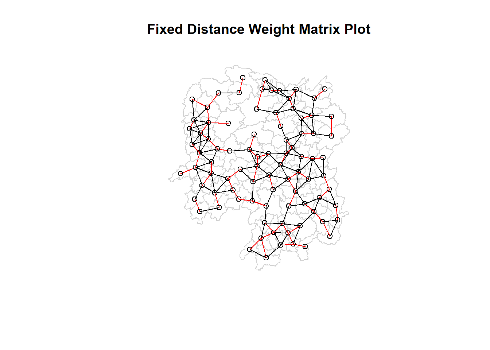
Note: The red links show that nearest neighbor for each area unit, while the black links show the additional neighbors if we set a distance buffer (or cut-off) of 62km.
Alternatively, we can plot the 2 sets of links separately with the nearest neighbor being a subset of the distance linked areas.
par(mfrow=c(1,2))
plot(hunan$geometry, border="lightgrey")
plot(k1, coords, add=TRUE, col="red", length=0.08)
title(main = "1st nearest neighbours")
plot(hunan$geometry, border="lightgrey")
plot(wm_d62, coords, add=TRUE, pch = 19, cex = 0.6)
title(main = "Distance-linked neighbours \n (within 62km)")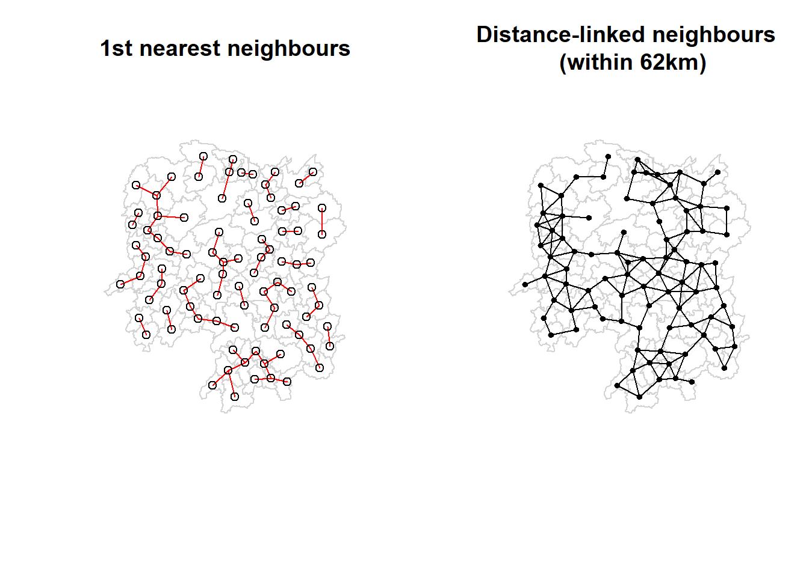
3.6.3 Compute adaptive distance weight matrix
To control the numbers of neighbors directly using k-nearest neighbors, we can tweak the k argument in the knearneigh() function.
knn6 <- knn2nb(knearneigh(coords, k=6))
knn6Neighbour list object:
Number of regions: 88
Number of nonzero links: 528
Percentage nonzero weights: 6.818182
Average number of links: 6
Non-symmetric neighbours listSimilarly, we can display the content of the matrix by using str() and note that each county has exactly 6 neighbors.
str(knn6)List of 88
$ : int [1:6] 2 3 4 5 57 64
$ : int [1:6] 1 3 57 58 78 85
$ : int [1:6] 1 2 4 5 57 85
$ : int [1:6] 1 3 5 6 69 85
$ : int [1:6] 1 3 4 6 69 85
$ : int [1:6] 3 4 5 69 75 85
$ : int [1:6] 9 66 67 71 74 84
$ : int [1:6] 9 46 47 78 80 86
$ : int [1:6] 8 46 66 68 84 86
$ : int [1:6] 16 19 22 70 72 73
$ : int [1:6] 10 14 16 17 70 72
$ : int [1:6] 13 15 60 61 63 83
$ : int [1:6] 12 15 60 61 63 83
$ : int [1:6] 11 15 16 17 72 83
$ : int [1:6] 12 13 14 17 60 83
$ : int [1:6] 10 11 17 22 72 83
$ : int [1:6] 10 11 14 16 72 83
$ : int [1:6] 20 22 23 63 77 83
$ : int [1:6] 10 20 21 73 74 82
$ : int [1:6] 18 19 21 22 23 82
$ : int [1:6] 19 20 35 74 82 86
$ : int [1:6] 10 16 18 19 20 83
$ : int [1:6] 18 20 41 77 79 82
$ : int [1:6] 25 28 31 52 54 81
$ : int [1:6] 24 28 31 33 54 81
$ : int [1:6] 25 27 29 33 42 81
$ : int [1:6] 26 29 30 37 42 81
$ : int [1:6] 24 25 33 49 52 54
$ : int [1:6] 26 27 37 42 43 81
$ : int [1:6] 26 27 28 33 49 81
$ : int [1:6] 24 25 36 39 40 54
$ : int [1:6] 24 31 50 54 55 56
$ : int [1:6] 25 26 28 30 49 81
$ : int [1:6] 36 40 41 45 56 80
$ : int [1:6] 21 41 46 47 80 82
$ : int [1:6] 31 34 40 45 56 80
$ : int [1:6] 26 27 29 42 43 44
$ : int [1:6] 23 43 44 62 77 79
$ : int [1:6] 25 40 42 43 44 81
$ : int [1:6] 31 36 39 43 45 79
$ : int [1:6] 23 35 45 79 80 82
$ : int [1:6] 26 27 37 39 43 81
$ : int [1:6] 37 39 40 42 44 79
$ : int [1:6] 37 38 39 42 43 79
$ : int [1:6] 34 36 40 41 79 80
$ : int [1:6] 8 9 35 47 78 86
$ : int [1:6] 8 21 35 46 80 86
$ : int [1:6] 49 50 51 52 53 55
$ : int [1:6] 28 33 48 51 52 54
$ : int [1:6] 32 48 51 52 54 55
$ : int [1:6] 28 48 49 50 52 54
$ : int [1:6] 28 48 49 50 51 54
$ : int [1:6] 48 50 51 52 55 75
$ : int [1:6] 24 28 49 50 51 52
$ : int [1:6] 32 48 50 52 53 75
$ : int [1:6] 32 34 36 78 80 85
$ : int [1:6] 1 2 3 58 64 68
$ : int [1:6] 2 57 64 66 68 78
$ : int [1:6] 12 13 60 61 87 88
$ : int [1:6] 12 13 59 61 63 87
$ : int [1:6] 12 13 60 62 63 87
$ : int [1:6] 12 38 61 63 77 87
$ : int [1:6] 12 18 60 61 62 83
$ : int [1:6] 1 3 57 58 68 76
$ : int [1:6] 58 64 66 67 68 76
$ : int [1:6] 9 58 67 68 76 84
$ : int [1:6] 7 65 66 68 76 84
$ : int [1:6] 9 57 58 66 78 84
$ : int [1:6] 4 5 6 32 75 85
$ : int [1:6] 10 16 19 22 72 73
$ : int [1:6] 7 19 73 74 84 86
$ : int [1:6] 10 11 14 16 17 70
$ : int [1:6] 10 19 21 70 71 74
$ : int [1:6] 19 21 71 73 84 86
$ : int [1:6] 6 32 50 53 55 69
$ : int [1:6] 58 64 65 66 67 68
$ : int [1:6] 18 23 38 61 62 63
$ : int [1:6] 2 8 9 46 58 68
$ : int [1:6] 38 40 41 43 44 45
$ : int [1:6] 34 35 36 41 45 47
$ : int [1:6] 25 26 28 33 39 42
$ : int [1:6] 19 20 21 23 35 41
$ : int [1:6] 12 13 15 16 22 63
$ : int [1:6] 7 9 66 68 71 74
$ : int [1:6] 2 3 4 5 56 69
$ : int [1:6] 8 9 21 46 47 74
$ : int [1:6] 59 60 61 62 63 88
$ : int [1:6] 59 60 61 62 63 87
- attr(*, "region.id")= chr [1:88] "1" "2" "3" "4" ...
- attr(*, "call")= language knearneigh(x = coords, k = 6)
- attr(*, "sym")= logi FALSE
- attr(*, "type")= chr "knn"
- attr(*, "knn-k")= num 6
- attr(*, "class")= chr "nb"3.6.3.1 Plot distance-based neighbors
We can run the following codes
plot(hunan$geometry, border="lightgrey")
plot(knn6, coords, pch = 19, cex = 0.6, add = TRUE, col = "red")
title(main = "Disance-based Neighbours \n (with k = 6)")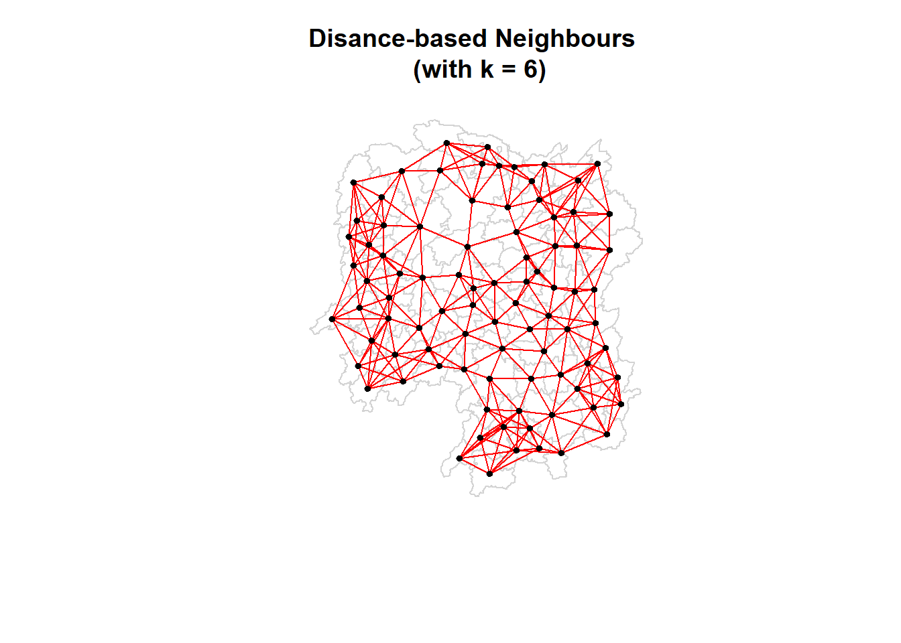
3.7 Weights based on Inversed Distance method
First, we compute the distances between areas (defined by Queen contiguity discussed in section 3.5.3.2) using nbdists() of spdep.
# Compute the inverse of distances between a county and its neighbors
dist <- nbdists(wm_q, coords, longlat = TRUE)
ids <- lapply(dist, function(x) 1/(x))
# Display first 6 rows of ids
head(ids)[[1]]
[1] 0.01535405 0.03916350 0.01820896 0.02807922 0.01145113
[[2]]
[1] 0.01535405 0.01764308 0.01925924 0.02323898 0.01719350
[[3]]
[1] 0.03916350 0.02822040 0.03695795 0.01395765
[[4]]
[1] 0.01820896 0.02822040 0.03414741 0.01539065
[[5]]
[1] 0.03695795 0.03414741 0.01524598 0.01618354
[[6]]
[1] 0.015390649 0.015245977 0.021748129 0.011883901 0.0098102973.7.1 Row-standard weight matrix (rswm)
Next, we need to assign weights to each neighboring polygon using the nb2listw() function. In our case, each neighboring polygon is assigned equal weight (style=“W”) for simplicity’s sake. This is accomplished by assigning the fraction 1/(#ofneighbors) to each neighboring county then summing the weighted income values. While this is the most intuitive way to summaries the neighbors’ values it has one drawback in that polygons along the edges of the study area will base their lagged values on fewer polygons thus potentially over- or under-estimating the true nature of the spatial autocorrelation in the data. Note that other more robust options are available, notably style=“B”.
#zero.policy=TRUE option allows for lists of neighbors with zero values (as opposed to NA). This should be used with caution since the user may not be aware of missing neighbors in the dataset
# Coding style = "W" means row standardisation is used
rswm_q <- nb2listw(wm_q, style="W", zero.policy = TRUE)
rswm_qCharacteristics of weights list object:
Neighbour list object:
Number of regions: 88
Number of nonzero links: 448
Percentage nonzero weights: 5.785124
Average number of links: 5.090909
Weights style: W
Weights constants summary:
n nn S0 S1 S2
W 88 7744 88 37.86334 365.9147The input of nb2listw() must be an object of class nb. The syntax of the function has two major arguments, namely style and zero.poly.
style can take values “W”, “B”, “C”, “U”, “minmax” and “S”. B is the basic binary coding, W is row standardised (sums over all links to n), C is globally standardised (sums over all links to n), U is equal to C divided by the number of neighbours (sums over all links to unity), while S is the variance-stabilizing coding scheme proposed by Tiefelsdorf et al. 1999, p. 167-168 (sums over all links to n).
If zero policy is set to TRUE, weights vectors of zero length are inserted for regions without neighbour in the neighbours list. These will in turn generate lag values of zero, equivalent to the sum of products of the zero row t(rep(0, length=length(neighbours))) %*% x, for arbitrary numerical vector x of length length(neighbours). The spatially lagged value of x for the zero-neighbour region will then be zero, which may (or may not) be a sensible choice.
Recall that in Section 3.5.1.1 , Polygon 1 has 5 neighbors
wm_q[[1]][1] 2 3 4 57 85To see the weights of the 5 neighbors:
rswm_q$weights[[1]][1] 0.2 0.2 0.2 0.2 0.2Each neighbor is assigned a 0.2 of the total weight. This means that when R computes the average neighboring income values, each neighbor’s income will be multiplied by 0.2 before being tallied.
Using the same method, we can also derive a row standardised distance weight matrix (based on Inversed Distance) by using the code chunk below.
rswm_ids <- nb2listw(wm_q, glist=ids, style="B", zero.policy=TRUE)
rswm_idsCharacteristics of weights list object:
Neighbour list object:
Number of regions: 88
Number of nonzero links: 448
Percentage nonzero weights: 5.785124
Average number of links: 5.090909
Weights style: B
Weights constants summary:
n nn S0 S1 S2
B 88 7744 8.786867 0.3776535 3.8137To see the distance weights of the 5 neighbors for Polygon 1:
rswm_ids$weights[[1]][1] 0.01535405 0.03916350 0.01820896 0.02807922 0.01145113Summary of the distance weights
summary(unlist(rswm_ids$weights)) Min. 1st Qu. Median Mean 3rd Qu. Max.
0.008218 0.015088 0.018739 0.019614 0.022823 0.040338 3.8 Application of Spatial Weight Matrix
The lag.listw() function (from spdep package) uses a “listw” sparse representation of a spatial weights matrix to compute the lag vector Vx. A listw object is typically created by nb2listw() function.
3.8.1 Spatial lag with row-standardized weights
We compute the average neighbor GDPPC value for each polygon. These values are often referred to as spatially lagged values.
GDPPC.lag <- lag.listw(rswm_q, hunan$GDPPC)
GDPPC.lag [1] 24847.20 22724.80 24143.25 27737.50 27270.25 21248.80 43747.00 33582.71
[9] 45651.17 32027.62 32671.00 20810.00 25711.50 30672.33 33457.75 31689.20
[17] 20269.00 23901.60 25126.17 21903.43 22718.60 25918.80 20307.00 20023.80
[25] 16576.80 18667.00 14394.67 19848.80 15516.33 20518.00 17572.00 15200.12
[33] 18413.80 14419.33 24094.50 22019.83 12923.50 14756.00 13869.80 12296.67
[41] 15775.17 14382.86 11566.33 13199.50 23412.00 39541.00 36186.60 16559.60
[49] 20772.50 19471.20 19827.33 15466.80 12925.67 18577.17 14943.00 24913.00
[57] 25093.00 24428.80 17003.00 21143.75 20435.00 17131.33 24569.75 23835.50
[65] 26360.00 47383.40 55157.75 37058.00 21546.67 23348.67 42323.67 28938.60
[73] 25880.80 47345.67 18711.33 29087.29 20748.29 35933.71 15439.71 29787.50
[81] 18145.00 21617.00 29203.89 41363.67 22259.09 44939.56 16902.00 16930.00We can append the spatially lag GDPPC values onto hunan sf data frame by using the code chunk below.
# Convert 2 separate lists into a list of lists
lag.list = list(hunan$NAME_3, lag.listw(rswm_q, hunan$GDPPC))
# Convert lag.list to a dataframe lag.res
lag.res = as.data.frame(lag.list)
# Rename the 2 columns in lag.res table
colnames(lag.res) = c("NAME_3", "lag GDPPC")
# Join lag.res wtih hunan
hunan <- left_join(hunan,lag.res)Joining, by = "NAME_3"The following table shows the average neighboring income values (stored in the Inc.lag object) for the first 6 counties
head(hunan)Simple feature collection with 6 features and 36 fields
Geometry type: POLYGON
Dimension: XY
Bounding box: xmin: 110.4922 ymin: 28.61762 xmax: 112.3013 ymax: 30.12812
Geodetic CRS: WGS 84
NAME_2 ID_3 NAME_3 ENGTYPE_3 Shape_Leng Shape_Area County City
1 Changde 21098 Anxiang County 1.869074 0.10056190 Anxiang Changde
2 Changde 21100 Hanshou County 2.360691 0.19978745 Hanshou Changde
3 Changde 21101 Jinshi County City 1.425620 0.05302413 Jinshi Changde
4 Changde 21102 Li County 3.474325 0.18908121 Li Changde
5 Changde 21103 Linli County 2.289506 0.11450357 Linli Changde
6 Changde 21104 Shimen County 4.171918 0.37194707 Shimen Changde
avg_wage deposite FAI Gov_Rev Gov_Exp GDP GDPPC GIO Loan NIPCR
1 31935 5517.2 3541.0 243.64 1779.5 12482.0 23667 5108.9 2806.9 7693.7
2 32265 7979.0 8665.0 386.13 2062.4 15788.0 20981 13491.0 4550.0 8269.9
3 28692 4581.7 4777.0 373.31 1148.4 8706.9 34592 10935.0 2242.0 8169.9
4 32541 13487.0 16066.0 709.61 2459.5 20322.0 24473 18402.0 6748.0 8377.0
5 32667 564.1 7781.2 336.86 1538.7 10355.0 25554 8214.0 358.0 8143.1
6 33261 8334.4 10531.0 548.33 2178.8 16293.0 27137 17795.0 6026.5 6156.0
Bed Emp EmpR EmpRT Pri_Stu Sec_Stu Household Household_R NOIP Pop_R
1 1931 336.39 270.5 205.9 19.584 17.819 148.1 135.4 53 346.0
2 2560 456.78 388.8 246.7 42.097 33.029 240.2 208.7 95 553.2
3 848 122.78 82.1 61.7 8.723 7.592 81.9 43.7 77 92.4
4 2038 513.44 426.8 227.1 38.975 33.938 268.5 256.0 96 539.7
5 1440 307.36 272.2 100.8 23.286 18.943 129.1 157.2 99 246.6
6 2502 392.05 329.6 193.8 29.245 26.104 190.6 184.7 122 399.2
RSCG Pop_T Agri Service Disp_Inc RORP ROREmp lag GDPPC
1 3957.9 528.3 4524.41 14100 16610 0.6549309 0.8041262 24847.20
2 4460.5 804.6 6545.35 17727 18925 0.6875466 0.8511756 22724.80
3 3683.0 251.8 2562.46 7525 19498 0.3669579 0.6686757 24143.25
4 7110.2 832.5 7562.34 53160 18985 0.6482883 0.8312558 27737.50
5 3604.9 409.3 3583.91 7031 18604 0.6024921 0.8856065 27270.25
6 6490.7 600.5 5266.51 6981 19275 0.6647794 0.8407091 21248.80
geometry
1 POLYGON ((112.0625 29.75523...
2 POLYGON ((112.2288 29.11684...
3 POLYGON ((111.8927 29.6013,...
4 POLYGON ((111.3731 29.94649...
5 POLYGON ((111.6324 29.76288...
6 POLYGON ((110.8825 30.11675...Next, we plot both the GDPPC and spatial lag GDPPC for comparison using the code chunk below.
gdppc = qtm(hunan, "GDPPC") +
tm_layout(main.title = "Distribution of GDPPC, 2012 \n ",
main.title.position = "center",
main.title.size = 1.2,
legend.height = 0.26,
legend.width = 0.40)
lag_gdppc = qtm(hunan, "lag GDPPC") +
tm_layout(main.title = "Distribution of Lag GDPPC, 2012 \n (Row Standardised)",
main.title.position = "center",
main.title.size = 1.2,
legend.height = 0.26,
legend.width = 0.40)
tmap_arrange(gdppc, lag_gdppc, asp=1, ncol=2)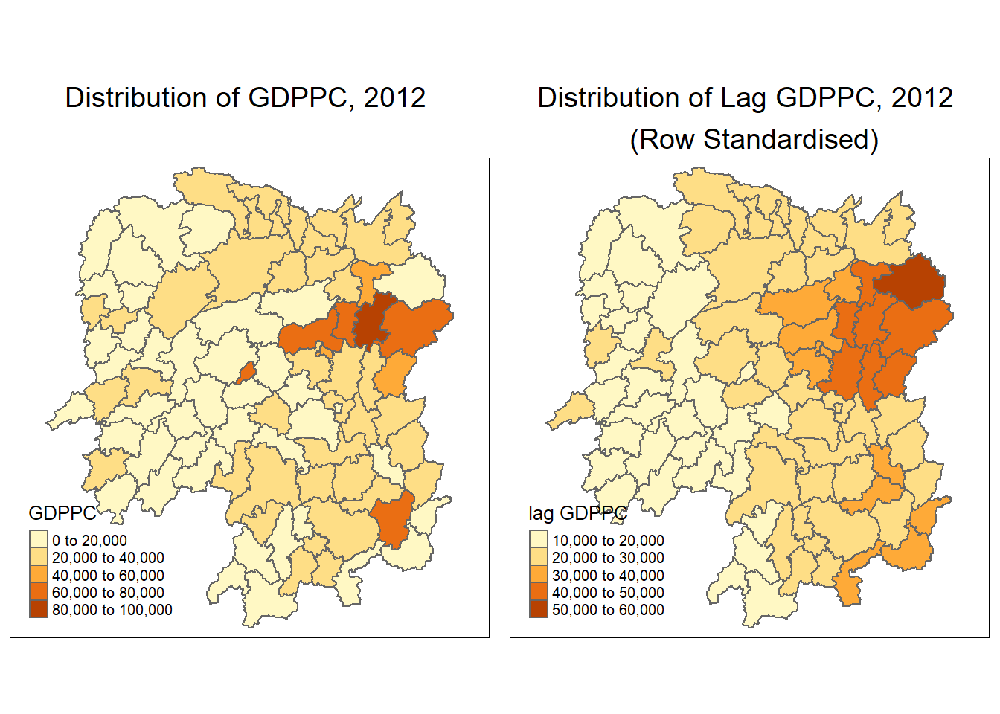
3.8.2 Spatial lag as a sum of neighboring values
We can calculate spatial lag as a sum of neighboring values by assigning binary weights. This requires us to go back to our neighbors list, then apply a function that will assign binary weights, then we use glist = in the nb2listw function to explicitly assign these weights.
We start by applying a function that will assign a value of 1 per each neighbor. This is done with lapply, which we have been using to manipulate the neighbors structure throughout the past notebooks. Basically it applies a function across each value in the neighbors structure.
b_weights <- lapply(wm_q, function(x) 0*x + 1)
b_weights2 <- nb2listw(wm_q,
glist = b_weights,
style = "B")
b_weights2Characteristics of weights list object:
Neighbour list object:
Number of regions: 88
Number of nonzero links: 448
Percentage nonzero weights: 5.785124
Average number of links: 5.090909
Weights style: B
Weights constants summary:
n nn S0 S1 S2
B 88 7744 448 896 10224With the proper weights assigned, we use lag.listw() to compute a lag variable from our weight and GDPPC.
lag_sum = list(hunan$NAME_3, lag.listw(b_weights2, hunan$GDPPC))
lag.res = as.data.frame(lag_sum)
colnames(lag.res) = c("NAME_3", "lag_sum GDPPC")We examine the results by using the code chunk below.
lag_sum[[1]]
[1] "Anxiang" "Hanshou" "Jinshi" "Li"
[5] "Linli" "Shimen" "Liuyang" "Ningxiang"
[9] "Wangcheng" "Anren" "Guidong" "Jiahe"
[13] "Linwu" "Rucheng" "Yizhang" "Yongxing"
[17] "Zixing" "Changning" "Hengdong" "Hengnan"
[21] "Hengshan" "Leiyang" "Qidong" "Chenxi"
[25] "Zhongfang" "Huitong" "Jingzhou" "Mayang"
[29] "Tongdao" "Xinhuang" "Xupu" "Yuanling"
[33] "Zhijiang" "Lengshuijiang" "Shuangfeng" "Xinhua"
[37] "Chengbu" "Dongan" "Dongkou" "Longhui"
[41] "Shaodong" "Suining" "Wugang" "Xinning"
[45] "Xinshao" "Shaoshan" "Xiangxiang" "Baojing"
[49] "Fenghuang" "Guzhang" "Huayuan" "Jishou"
[53] "Longshan" "Luxi" "Yongshun" "Anhua"
[57] "Nan" "Yuanjiang" "Jianghua" "Lanshan"
[61] "Ningyuan" "Shuangpai" "Xintian" "Huarong"
[65] "Linxiang" "Miluo" "Pingjiang" "Xiangyin"
[69] "Cili" "Chaling" "Liling" "Yanling"
[73] "You" "Zhuzhou" "Sangzhi" "Yueyang"
[77] "Qiyang" "Taojiang" "Shaoyang" "Lianyuan"
[81] "Hongjiang" "Hengyang" "Guiyang" "Changsha"
[85] "Taoyuan" "Xiangtan" "Dao" "Jiangyong"
[[2]]
[1] 124236 113624 96573 110950 109081 106244 174988 235079 273907 256221
[11] 98013 104050 102846 92017 133831 158446 141883 119508 150757 153324
[21] 113593 129594 142149 100119 82884 74668 43184 99244 46549 20518
[31] 140576 121601 92069 43258 144567 132119 51694 59024 69349 73780
[41] 94651 100680 69398 52798 140472 118623 180933 82798 83090 97356
[51] 59482 77334 38777 111463 74715 174391 150558 122144 68012 84575
[61] 143045 51394 98279 47671 26360 236917 220631 185290 64640 70046
[71] 126971 144693 129404 284074 112268 203611 145238 251536 108078 238300
[81] 108870 108085 262835 248182 244850 404456 67608 33860We append the lag_sum GDPPC field into hunan sf data frame by using the code chunk below.
hunan <- left_join(hunan, lag.res)Joining, by = "NAME_3"Finally, we plot both the GDPPC and Spatial Lag Sum GDPPC for comparison using the code chunk below.
gdppc = qtm(hunan, "GDPPC")+
tm_layout(main.title = "Distribution of GDPPC, 2012 \n ",
main.title.position = "center",
main.title.size = 1.2,
legend.height = 0.26,
legend.width = 0.40)
lag_sum_gdppc <- qtm(hunan, "lag_sum GDPPC") +
tm_layout(main.title = "Distn of Lag_Sum GDPPC, 2012\n(sum of neighboring values)",
main.title.position = "center",
main.title.size = 1.2,
legend.height = 0.26,
legend.width = 0.40)
tmap_arrange(gdppc, lag_sum_gdppc, asp=1, ncol=2)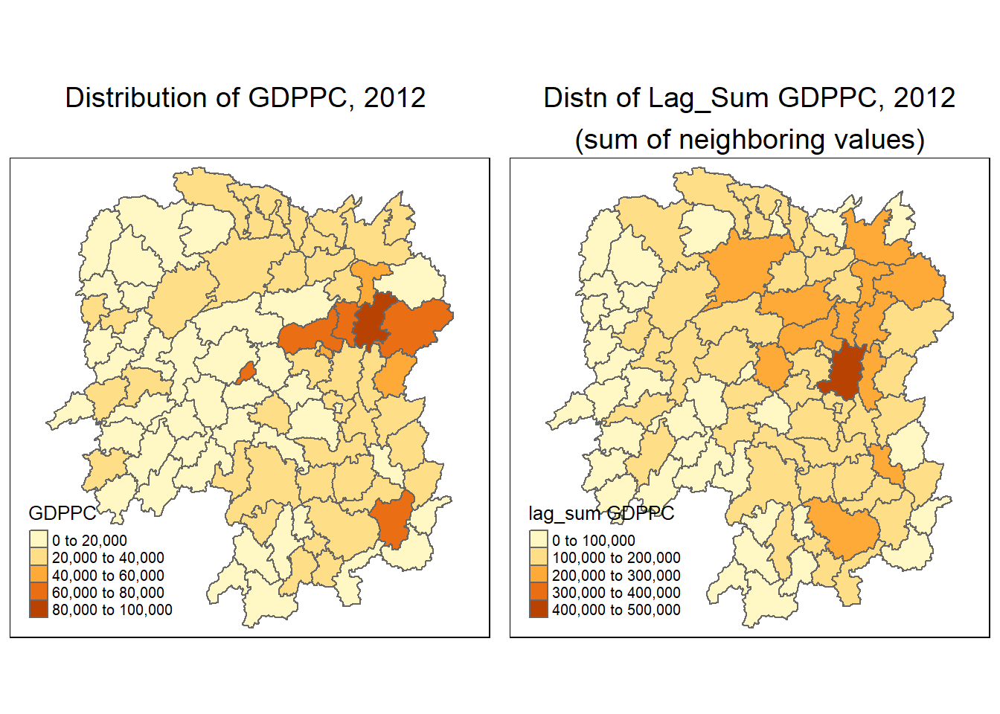
3.8.3 Spatial window average
The spatial window average uses row-standardized weights and includes the diagonal element. To do this in R, we need to go back to the neighbors structure and add the diagonal element (the data points for the county itself) before assigning weights.
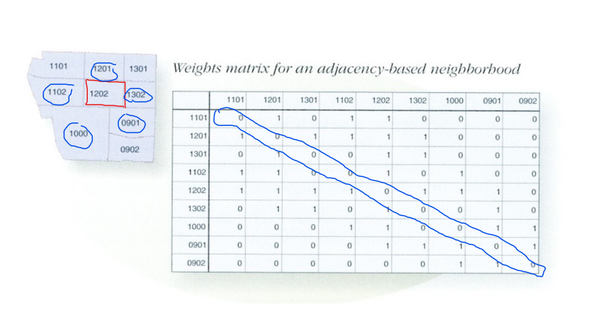
To add the diagonal element to the neighbour list, we just need to use include.self() from spdep.
wm_qs <- include.self(wm_q)
wm_qsNeighbour list object:
Number of regions: 88
Number of nonzero links: 536
Percentage nonzero weights: 6.921488
Average number of links: 6.090909 Notice that the Number of nonzero links, Percentage nonzero weights and Average number of links are 536, 6.921488 and 6.090909 respectively as compared to wm_q of 448, 5.785124 and 5.090909
Let us take a good look at the neighbour list of area [1] by using the code chunk below.
wm_qs[[1]][1] 1 2 3 4 57 85Notice that now [1] has six neighbours instead of five.
Now we obtain weights with nb2listw()
wm_qs <- nb2listw(wm_qs)
wm_qsCharacteristics of weights list object:
Neighbour list object:
Number of regions: 88
Number of nonzero links: 536
Percentage nonzero weights: 6.921488
Average number of links: 6.090909
Weights style: W
Weights constants summary:
n nn S0 S1 S2
W 88 7744 88 30.90265 357.5308Again, we use nb2listw() and glist() to explicitly assign weight values.
Lastly, we just need to create the lag variable from our weight structure and GDPPC variable.
lag_w_avg_gpdpc <- lag.listw(wm_qs,
hunan$GDPPC)
lag_w_avg_gpdpc [1] 24650.50 22434.17 26233.00 27084.60 26927.00 22230.17 47621.20 37160.12
[9] 49224.71 29886.89 26627.50 22690.17 25366.40 25825.75 30329.00 32682.83
[17] 25948.62 23987.67 25463.14 21904.38 23127.50 25949.83 20018.75 19524.17
[25] 18955.00 17800.40 15883.00 18831.33 14832.50 17965.00 17159.89 16199.44
[33] 18764.50 26878.75 23188.86 20788.14 12365.20 15985.00 13764.83 11907.43
[41] 17128.14 14593.62 11644.29 12706.00 21712.29 43548.25 35049.00 16226.83
[49] 19294.40 18156.00 19954.75 18145.17 12132.75 18419.29 14050.83 23619.75
[57] 24552.71 24733.67 16762.60 20932.60 19467.75 18334.00 22541.00 26028.00
[65] 29128.50 46569.00 47576.60 36545.50 20838.50 22531.00 42115.50 27619.00
[73] 27611.33 44523.29 18127.43 28746.38 20734.50 33880.62 14716.38 28516.22
[81] 18086.14 21244.50 29568.80 48119.71 22310.75 43151.60 17133.40 17009.33Next, we will convert the lag variable listw object into a data.frame by using as.data.frame().
lag.list.wm_qs <- list(hunan$NAME_3, lag.listw(wm_qs, hunan$GDPPC))
lag_wm_qs.res <- as.data.frame(lag.list.wm_qs)
colnames(lag_wm_qs.res) <- c("NAME_3", "lag_window_avg GDPPC")
The third command line on the code chunk above renames the field names of lag_wm_q1.res object into NAME_3 and lag_window_avg GDPPC respectively.
Next, the code chunk below will be used to append lag_window_avg GDPPC values onto hunan sf data.frame by using left_join() of dplyr package.
hunan <- left_join(hunan, lag_wm_qs.res)Joining, by = "NAME_3"To compare the values of lag GDPPC and Spatial window average, kable() of Knitr package is used to prepare a table using the code chunk below.
hunan %>%
select("County", "lag GDPPC", "lag_window_avg GDPPC") %>%
kable()| County | lag GDPPC | lag_window_avg GDPPC | geometry |
|---|---|---|---|
| Anxiang | 24847.20 | 24650.50 | POLYGON ((112.0625 29.75523… |
| Hanshou | 22724.80 | 22434.17 | POLYGON ((112.2288 29.11684… |
| Jinshi | 24143.25 | 26233.00 | POLYGON ((111.8927 29.6013,… |
| Li | 27737.50 | 27084.60 | POLYGON ((111.3731 29.94649… |
| Linli | 27270.25 | 26927.00 | POLYGON ((111.6324 29.76288… |
| Shimen | 21248.80 | 22230.17 | POLYGON ((110.8825 30.11675… |
| Liuyang | 43747.00 | 47621.20 | POLYGON ((113.9905 28.5682,… |
| Ningxiang | 33582.71 | 37160.12 | POLYGON ((112.7181 28.38299… |
| Wangcheng | 45651.17 | 49224.71 | POLYGON ((112.7914 28.52688… |
| Anren | 32027.62 | 29886.89 | POLYGON ((113.1757 26.82734… |
| Guidong | 32671.00 | 26627.50 | POLYGON ((114.1799 26.20117… |
| Jiahe | 20810.00 | 22690.17 | POLYGON ((112.4425 25.74358… |
| Linwu | 25711.50 | 25366.40 | POLYGON ((112.5914 25.55143… |
| Rucheng | 30672.33 | 25825.75 | POLYGON ((113.6759 25.87578… |
| Yizhang | 33457.75 | 30329.00 | POLYGON ((113.2621 25.68394… |
| Yongxing | 31689.20 | 32682.83 | POLYGON ((113.3169 26.41843… |
| Zixing | 20269.00 | 25948.62 | POLYGON ((113.7311 26.16259… |
| Changning | 23901.60 | 23987.67 | POLYGON ((112.6144 26.60198… |
| Hengdong | 25126.17 | 25463.14 | POLYGON ((113.1056 27.21007… |
| Hengnan | 21903.43 | 21904.38 | POLYGON ((112.7599 26.98149… |
| Hengshan | 22718.60 | 23127.50 | POLYGON ((112.607 27.4689, … |
| Leiyang | 25918.80 | 25949.83 | POLYGON ((112.9996 26.69276… |
| Qidong | 20307.00 | 20018.75 | POLYGON ((111.7818 27.0383,… |
| Chenxi | 20023.80 | 19524.17 | POLYGON ((110.2624 28.21778… |
| Zhongfang | 16576.80 | 18955.00 | POLYGON ((109.9431 27.72858… |
| Huitong | 18667.00 | 17800.40 | POLYGON ((109.9419 27.10512… |
| Jingzhou | 14394.67 | 15883.00 | POLYGON ((109.8186 26.75842… |
| Mayang | 19848.80 | 18831.33 | POLYGON ((109.795 27.98008,… |
| Tongdao | 15516.33 | 14832.50 | POLYGON ((109.9294 26.46561… |
| Xinhuang | 20518.00 | 17965.00 | POLYGON ((109.227 27.43733,… |
| Xupu | 17572.00 | 17159.89 | POLYGON ((110.7189 28.30485… |
| Yuanling | 15200.12 | 16199.44 | POLYGON ((110.9652 28.99895… |
| Zhijiang | 18413.80 | 18764.50 | POLYGON ((109.8818 27.60661… |
| Lengshuijiang | 14419.33 | 26878.75 | POLYGON ((111.5307 27.81472… |
| Shuangfeng | 24094.50 | 23188.86 | POLYGON ((112.263 27.70421,… |
| Xinhua | 22019.83 | 20788.14 | POLYGON ((111.3345 28.19642… |
| Chengbu | 12923.50 | 12365.20 | POLYGON ((110.4455 26.69317… |
| Dongan | 14756.00 | 15985.00 | POLYGON ((111.4531 26.86812… |
| Dongkou | 13869.80 | 13764.83 | POLYGON ((110.6622 27.37305… |
| Longhui | 12296.67 | 11907.43 | POLYGON ((110.985 27.65983,… |
| Shaodong | 15775.17 | 17128.14 | POLYGON ((111.9054 27.40254… |
| Suining | 14382.86 | 14593.62 | POLYGON ((110.389 27.10006,… |
| Wugang | 11566.33 | 11644.29 | POLYGON ((110.9878 27.03345… |
| Xinning | 13199.50 | 12706.00 | POLYGON ((111.0736 26.84627… |
| Xinshao | 23412.00 | 21712.29 | POLYGON ((111.6013 27.58275… |
| Shaoshan | 39541.00 | 43548.25 | POLYGON ((112.5391 27.97742… |
| Xiangxiang | 36186.60 | 35049.00 | POLYGON ((112.4549 28.05783… |
| Baojing | 16559.60 | 16226.83 | POLYGON ((109.7015 28.82844… |
| Fenghuang | 20772.50 | 19294.40 | POLYGON ((109.5239 28.19206… |
| Guzhang | 19471.20 | 18156.00 | POLYGON ((109.8968 28.74034… |
| Huayuan | 19827.33 | 19954.75 | POLYGON ((109.5647 28.61712… |
| Jishou | 15466.80 | 18145.17 | POLYGON ((109.8375 28.4696,… |
| Longshan | 12925.67 | 12132.75 | POLYGON ((109.6337 29.62521… |
| Luxi | 18577.17 | 18419.29 | POLYGON ((110.1067 28.41835… |
| Yongshun | 14943.00 | 14050.83 | POLYGON ((110.0003 29.29499… |
| Anhua | 24913.00 | 23619.75 | POLYGON ((111.6034 28.63716… |
| Nan | 25093.00 | 24552.71 | POLYGON ((112.3232 29.46074… |
| Yuanjiang | 24428.80 | 24733.67 | POLYGON ((112.4391 29.1791,… |
| Jianghua | 17003.00 | 16762.60 | POLYGON ((111.6461 25.29661… |
| Lanshan | 21143.75 | 20932.60 | POLYGON ((112.2286 25.61123… |
| Ningyuan | 20435.00 | 19467.75 | POLYGON ((112.0715 26.09892… |
| Shuangpai | 17131.33 | 18334.00 | POLYGON ((111.8864 26.11957… |
| Xintian | 24569.75 | 22541.00 | POLYGON ((112.2578 26.0796,… |
| Huarong | 23835.50 | 26028.00 | POLYGON ((112.9242 29.69134… |
| Linxiang | 26360.00 | 29128.50 | POLYGON ((113.5502 29.67418… |
| Miluo | 47383.40 | 46569.00 | POLYGON ((112.9902 29.02139… |
| Pingjiang | 55157.75 | 47576.60 | POLYGON ((113.8436 29.06152… |
| Xiangyin | 37058.00 | 36545.50 | POLYGON ((112.9173 28.98264… |
| Cili | 21546.67 | 20838.50 | POLYGON ((110.8822 29.69017… |
| Chaling | 23348.67 | 22531.00 | POLYGON ((113.7666 27.10573… |
| Liling | 42323.67 | 42115.50 | POLYGON ((113.5673 27.94346… |
| Yanling | 28938.60 | 27619.00 | POLYGON ((113.9292 26.6154,… |
| You | 25880.80 | 27611.33 | POLYGON ((113.5879 27.41324… |
| Zhuzhou | 47345.67 | 44523.29 | POLYGON ((113.2493 28.02411… |
| Sangzhi | 18711.33 | 18127.43 | POLYGON ((110.556 29.40543,… |
| Yueyang | 29087.29 | 28746.38 | POLYGON ((113.343 29.61064,… |
| Qiyang | 20748.29 | 20734.50 | POLYGON ((111.5563 26.81318… |
| Taojiang | 35933.71 | 33880.62 | POLYGON ((112.0508 28.67265… |
| Shaoyang | 15439.71 | 14716.38 | POLYGON ((111.5013 27.30207… |
| Lianyuan | 29787.50 | 28516.22 | POLYGON ((111.6789 28.02946… |
| Hongjiang | 18145.00 | 18086.14 | POLYGON ((110.1441 27.47513… |
| Hengyang | 21617.00 | 21244.50 | POLYGON ((112.7144 26.98613… |
| Guiyang | 29203.89 | 29568.80 | POLYGON ((113.0811 26.04963… |
| Changsha | 41363.67 | 48119.71 | POLYGON ((112.9421 28.03722… |
| Taoyuan | 22259.09 | 22310.75 | POLYGON ((112.0612 29.32855… |
| Xiangtan | 44939.56 | 43151.60 | POLYGON ((113.0426 27.8942,… |
| Dao | 16902.00 | 17133.40 | POLYGON ((111.498 25.81679,… |
| Jiangyong | 16930.00 | 17009.33 | POLYGON ((111.3659 25.39472… |
Lastly, we use qtm() of tmap package is used to plot the lag_GDPPC and w_ave_gdppc map next to each other for quick comparison.
# lag_gdppc map is defined in section 3.8.1 above
w_avg_gdppc <- qtm(hunan, "lag_window_avg GDPPC") +
tm_layout(main.title = "Distribution of Spatial Window \nAverage GDPPC, 2012",
main.title.position = "center",
main.title.size = 1.2,
legend.height = 0.26,
legend.width = 0.40)
tmap_arrange(lag_gdppc, w_avg_gdppc, asp=1, ncol=2)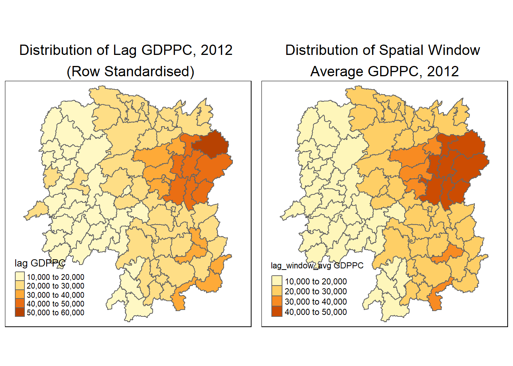
For more effective comparison, it is advisible to use the core tmap mapping functions.
3.8.4 Spatial window sum
The spatial window sum is the counterpart of the window average, but without using row-standardized weights.
To add the diagonal element to the neighbour list, we just need to use include.self() from spdep.
wm_qs <- include.self(wm_q)
wm_qsNeighbour list object:
Number of regions: 88
Number of nonzero links: 536
Percentage nonzero weights: 6.921488
Average number of links: 6.090909 Next, we will assign binary weights to the neighbor structure that includes the diagonal element.
b_weights <- lapply(wm_qs, function(x) 0*x + 1)
b_weights[1][[1]]
[1] 1 1 1 1 1 1Notice that now [1] has six neighbours instead of five.
Again, we use nb2listw() and glist() to explicitly assign weight values
b_weights2 <- nb2listw(wm_qs,
glist = b_weights,
style = "B")
b_weights2Characteristics of weights list object:
Neighbour list object:
Number of regions: 88
Number of nonzero links: 536
Percentage nonzero weights: 6.921488
Average number of links: 6.090909
Weights style: B
Weights constants summary:
n nn S0 S1 S2
B 88 7744 536 1072 14160With our new weight structure, we can compute the lag variable with lag.listw().
w_sum_gdppc <- list(hunan$NAME_3, lag.listw(b_weights2, hunan$GDPPC))
w_sum_gdppc[[1]]
[1] "Anxiang" "Hanshou" "Jinshi" "Li"
[5] "Linli" "Shimen" "Liuyang" "Ningxiang"
[9] "Wangcheng" "Anren" "Guidong" "Jiahe"
[13] "Linwu" "Rucheng" "Yizhang" "Yongxing"
[17] "Zixing" "Changning" "Hengdong" "Hengnan"
[21] "Hengshan" "Leiyang" "Qidong" "Chenxi"
[25] "Zhongfang" "Huitong" "Jingzhou" "Mayang"
[29] "Tongdao" "Xinhuang" "Xupu" "Yuanling"
[33] "Zhijiang" "Lengshuijiang" "Shuangfeng" "Xinhua"
[37] "Chengbu" "Dongan" "Dongkou" "Longhui"
[41] "Shaodong" "Suining" "Wugang" "Xinning"
[45] "Xinshao" "Shaoshan" "Xiangxiang" "Baojing"
[49] "Fenghuang" "Guzhang" "Huayuan" "Jishou"
[53] "Longshan" "Luxi" "Yongshun" "Anhua"
[57] "Nan" "Yuanjiang" "Jianghua" "Lanshan"
[61] "Ningyuan" "Shuangpai" "Xintian" "Huarong"
[65] "Linxiang" "Miluo" "Pingjiang" "Xiangyin"
[69] "Cili" "Chaling" "Liling" "Yanling"
[73] "You" "Zhuzhou" "Sangzhi" "Yueyang"
[77] "Qiyang" "Taojiang" "Shaoyang" "Lianyuan"
[81] "Hongjiang" "Hengyang" "Guiyang" "Changsha"
[85] "Taoyuan" "Xiangtan" "Dao" "Jiangyong"
[[2]]
[1] 147903 134605 131165 135423 134635 133381 238106 297281 344573 268982
[11] 106510 136141 126832 103303 151645 196097 207589 143926 178242 175235
[21] 138765 155699 160150 117145 113730 89002 63532 112988 59330 35930
[31] 154439 145795 112587 107515 162322 145517 61826 79925 82589 83352
[41] 119897 116749 81510 63530 151986 174193 210294 97361 96472 108936
[51] 79819 108871 48531 128935 84305 188958 171869 148402 83813 104663
[61] 155742 73336 112705 78084 58257 279414 237883 219273 83354 90124
[71] 168462 165714 165668 311663 126892 229971 165876 271045 117731 256646
[81] 126603 127467 295688 336838 267729 431516 85667 51028Next, we will convert the lag variable listw object into a data.frame by using as.data.frame().
w_sum_gdppc.res <- as.data.frame(w_sum_gdppc)
colnames(w_sum_gdppc.res) <- c("NAME_3", "w_sum GDPPC")
The second command line on the code chunk above renames the field names of w_sum_gdppc.res object into NAME_3 and w_sum GDPPC respectively.
Next, the code chunk below will be used to append w_sum GDPPC values onto hunan sf data.frame by using left_join() of dplyr package.
hunan <- left_join(hunan, w_sum_gdppc.res)Joining, by = "NAME_3"To compare the values of lag GDPPC and Spatial window average, kable() of Knitr package is used to prepare a table using the code chunk below.
hunan %>%
select("County", "lag_sum GDPPC", "w_sum GDPPC") %>%
kable()| County | lag_sum GDPPC | w_sum GDPPC | geometry |
|---|---|---|---|
| Anxiang | 124236 | 147903 | POLYGON ((112.0625 29.75523… |
| Hanshou | 113624 | 134605 | POLYGON ((112.2288 29.11684… |
| Jinshi | 96573 | 131165 | POLYGON ((111.8927 29.6013,… |
| Li | 110950 | 135423 | POLYGON ((111.3731 29.94649… |
| Linli | 109081 | 134635 | POLYGON ((111.6324 29.76288… |
| Shimen | 106244 | 133381 | POLYGON ((110.8825 30.11675… |
| Liuyang | 174988 | 238106 | POLYGON ((113.9905 28.5682,… |
| Ningxiang | 235079 | 297281 | POLYGON ((112.7181 28.38299… |
| Wangcheng | 273907 | 344573 | POLYGON ((112.7914 28.52688… |
| Anren | 256221 | 268982 | POLYGON ((113.1757 26.82734… |
| Guidong | 98013 | 106510 | POLYGON ((114.1799 26.20117… |
| Jiahe | 104050 | 136141 | POLYGON ((112.4425 25.74358… |
| Linwu | 102846 | 126832 | POLYGON ((112.5914 25.55143… |
| Rucheng | 92017 | 103303 | POLYGON ((113.6759 25.87578… |
| Yizhang | 133831 | 151645 | POLYGON ((113.2621 25.68394… |
| Yongxing | 158446 | 196097 | POLYGON ((113.3169 26.41843… |
| Zixing | 141883 | 207589 | POLYGON ((113.7311 26.16259… |
| Changning | 119508 | 143926 | POLYGON ((112.6144 26.60198… |
| Hengdong | 150757 | 178242 | POLYGON ((113.1056 27.21007… |
| Hengnan | 153324 | 175235 | POLYGON ((112.7599 26.98149… |
| Hengshan | 113593 | 138765 | POLYGON ((112.607 27.4689, … |
| Leiyang | 129594 | 155699 | POLYGON ((112.9996 26.69276… |
| Qidong | 142149 | 160150 | POLYGON ((111.7818 27.0383,… |
| Chenxi | 100119 | 117145 | POLYGON ((110.2624 28.21778… |
| Zhongfang | 82884 | 113730 | POLYGON ((109.9431 27.72858… |
| Huitong | 74668 | 89002 | POLYGON ((109.9419 27.10512… |
| Jingzhou | 43184 | 63532 | POLYGON ((109.8186 26.75842… |
| Mayang | 99244 | 112988 | POLYGON ((109.795 27.98008,… |
| Tongdao | 46549 | 59330 | POLYGON ((109.9294 26.46561… |
| Xinhuang | 20518 | 35930 | POLYGON ((109.227 27.43733,… |
| Xupu | 140576 | 154439 | POLYGON ((110.7189 28.30485… |
| Yuanling | 121601 | 145795 | POLYGON ((110.9652 28.99895… |
| Zhijiang | 92069 | 112587 | POLYGON ((109.8818 27.60661… |
| Lengshuijiang | 43258 | 107515 | POLYGON ((111.5307 27.81472… |
| Shuangfeng | 144567 | 162322 | POLYGON ((112.263 27.70421,… |
| Xinhua | 132119 | 145517 | POLYGON ((111.3345 28.19642… |
| Chengbu | 51694 | 61826 | POLYGON ((110.4455 26.69317… |
| Dongan | 59024 | 79925 | POLYGON ((111.4531 26.86812… |
| Dongkou | 69349 | 82589 | POLYGON ((110.6622 27.37305… |
| Longhui | 73780 | 83352 | POLYGON ((110.985 27.65983,… |
| Shaodong | 94651 | 119897 | POLYGON ((111.9054 27.40254… |
| Suining | 100680 | 116749 | POLYGON ((110.389 27.10006,… |
| Wugang | 69398 | 81510 | POLYGON ((110.9878 27.03345… |
| Xinning | 52798 | 63530 | POLYGON ((111.0736 26.84627… |
| Xinshao | 140472 | 151986 | POLYGON ((111.6013 27.58275… |
| Shaoshan | 118623 | 174193 | POLYGON ((112.5391 27.97742… |
| Xiangxiang | 180933 | 210294 | POLYGON ((112.4549 28.05783… |
| Baojing | 82798 | 97361 | POLYGON ((109.7015 28.82844… |
| Fenghuang | 83090 | 96472 | POLYGON ((109.5239 28.19206… |
| Guzhang | 97356 | 108936 | POLYGON ((109.8968 28.74034… |
| Huayuan | 59482 | 79819 | POLYGON ((109.5647 28.61712… |
| Jishou | 77334 | 108871 | POLYGON ((109.8375 28.4696,… |
| Longshan | 38777 | 48531 | POLYGON ((109.6337 29.62521… |
| Luxi | 111463 | 128935 | POLYGON ((110.1067 28.41835… |
| Yongshun | 74715 | 84305 | POLYGON ((110.0003 29.29499… |
| Anhua | 174391 | 188958 | POLYGON ((111.6034 28.63716… |
| Nan | 150558 | 171869 | POLYGON ((112.3232 29.46074… |
| Yuanjiang | 122144 | 148402 | POLYGON ((112.4391 29.1791,… |
| Jianghua | 68012 | 83813 | POLYGON ((111.6461 25.29661… |
| Lanshan | 84575 | 104663 | POLYGON ((112.2286 25.61123… |
| Ningyuan | 143045 | 155742 | POLYGON ((112.0715 26.09892… |
| Shuangpai | 51394 | 73336 | POLYGON ((111.8864 26.11957… |
| Xintian | 98279 | 112705 | POLYGON ((112.2578 26.0796,… |
| Huarong | 47671 | 78084 | POLYGON ((112.9242 29.69134… |
| Linxiang | 26360 | 58257 | POLYGON ((113.5502 29.67418… |
| Miluo | 236917 | 279414 | POLYGON ((112.9902 29.02139… |
| Pingjiang | 220631 | 237883 | POLYGON ((113.8436 29.06152… |
| Xiangyin | 185290 | 219273 | POLYGON ((112.9173 28.98264… |
| Cili | 64640 | 83354 | POLYGON ((110.8822 29.69017… |
| Chaling | 70046 | 90124 | POLYGON ((113.7666 27.10573… |
| Liling | 126971 | 168462 | POLYGON ((113.5673 27.94346… |
| Yanling | 144693 | 165714 | POLYGON ((113.9292 26.6154,… |
| You | 129404 | 165668 | POLYGON ((113.5879 27.41324… |
| Zhuzhou | 284074 | 311663 | POLYGON ((113.2493 28.02411… |
| Sangzhi | 112268 | 126892 | POLYGON ((110.556 29.40543,… |
| Yueyang | 203611 | 229971 | POLYGON ((113.343 29.61064,… |
| Qiyang | 145238 | 165876 | POLYGON ((111.5563 26.81318… |
| Taojiang | 251536 | 271045 | POLYGON ((112.0508 28.67265… |
| Shaoyang | 108078 | 117731 | POLYGON ((111.5013 27.30207… |
| Lianyuan | 238300 | 256646 | POLYGON ((111.6789 28.02946… |
| Hongjiang | 108870 | 126603 | POLYGON ((110.1441 27.47513… |
| Hengyang | 108085 | 127467 | POLYGON ((112.7144 26.98613… |
| Guiyang | 262835 | 295688 | POLYGON ((113.0811 26.04963… |
| Changsha | 248182 | 336838 | POLYGON ((112.9421 28.03722… |
| Taoyuan | 244850 | 267729 | POLYGON ((112.0612 29.32855… |
| Xiangtan | 404456 | 431516 | POLYGON ((113.0426 27.8942,… |
| Dao | 67608 | 85667 | POLYGON ((111.498 25.81679,… |
| Jiangyong | 33860 | 51028 | POLYGON ((111.3659 25.39472… |
Lastly, qtm() of tmap package is used to plot the lag_sum GDPPC and w_sum_gdppc maps next to each other for quick comparison.
# lag_sum_gdppc map is defined in section 3.8.2 above
w_sum_gdppc <- qtm(hunan, "w_sum GDPPC")+
tm_layout(main.title = "Distribution of Spatial Window \nSum GDPPC, 2012",
main.title.position = "center",
main.title.size = 1.2,
legend.height = 0.26,
legend.width = 0.40)
tmap_arrange(lag_sum_gdppc, w_sum_gdppc, asp=1, ncol=2)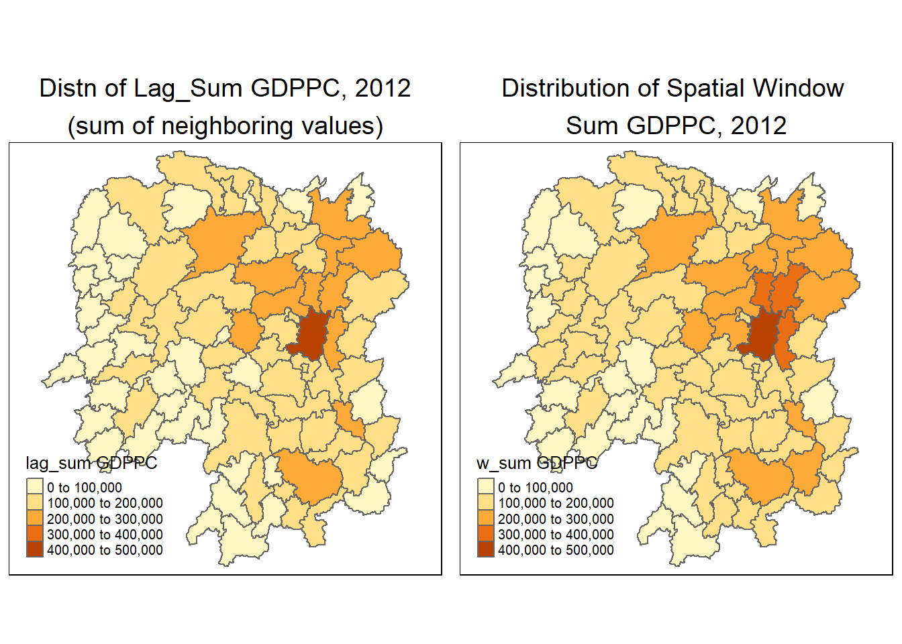